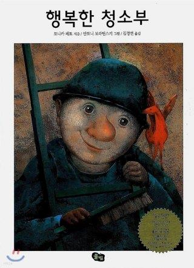
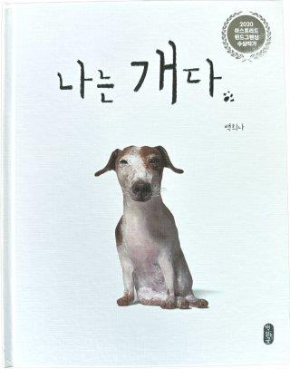

1. 초등5학년 교육적 접근 방법
초등 5학년 아동을 위한 교육적 접근 방법은 학습의 자기주도성을 높이고, 다양한 경험을 통해 창의적 사고를 촉진하는 방향으로 이루어져야 한다. 학습의 흥미를 유지하기 위해 탐구 기반 학습을 활용하고, 실생활과 연계된 학습 경험을 제공하는 것이 효과적이다. 프로젝트 기반 학습을 통해 아동이 스스로 문제를 해결하고 협력하는 경험을 쌓도록 돕는 것도 중요하다.
이 시기는 아동이 스스로 학습 목표를 설정하고 이를 달성하는 경험을 쌓도록 돕기 위해 학습 일지를 작성하도록 유도할 수 있다. 학습에 대한 동기 부여를 위해 긍정적인 피드백을 제공하고, 개별 학습 속도에 맞춘 맞춤형 교육을 지원해야 한다. 학습 내용을 단순한 암기보다는 이해와 응용을 중심으로 접근하며, 개념을 다양한 맥락에서 활용할 수 있도록 지도하는 것이 바람직하다. 실제적인 문제 해결 능력을 기를 수 있도록 창의적 문제 해결 학습(PBL, Problem-Based Learning)을 활용할 수도 있다. 또한, STEAM(과학, 기술, 공학, 예술, 수학) 기반의 학습을 통해 융합적 사고를 증진하고, 다양한 학문 분야에 대한 관심을 높일 수 있는 능력을 발휘하는 시기이다. 아울러 정기적인 독서 프로그램을 통해 사고력과 문해력을 증진하는 것도 필요하다.
2. 초등5학년에 알맞은 위인전, 사고력과 감수성을 키우는 책
책을 읽는 것은 단순한 지식 습득을 넘어 한 인간으로서 성장하는 중요한 과정이다. 특히 위대한 인물들의 삶을 담은 책을 읽는 것은 초등 5학년 시기의 학생들에게 여러 가지 중요한 가치를 심어줄 수 있다. 초등 5학년 시기는 가치관이 형성되고 자아 정체성이 발달하는 중요한 시기이다. 위대한 인물들의 삶을 읽으며 얻는 교훈은 단순한 감동을 넘어서 아이들이 미래를 꿈꾸고, 도전하며, 타인을 이해하는 따뜻한 마음을 키우는 데 큰 역할을 한다. 따라서 이러한 책을 읽는 것은 단순한 독서가 아니라, 삶을 배우는 과정의 특징이 있다.
1) 도전 정신과 끈기 기르기
위대한 인물들은 모두 실패와 역경을 경험했지만, 포기하지 않고 도전했다. 에디슨은 수많은 실패를 겪으며 전구를 발명했고, 마리 퀴리는 어려운 환경에서도 연구를 멈추지 않았다. 이러한 이야기를 통해 아이들은 실패를 두려워하지 않고 도전하는 자세를 배울 수 있다.
2) 감수성과 공감 능력 향상
헬렌 켈러처럼 어려운 환경에서도 희망을 찾고, 넬슨 만델라처럼 평등과 정의를 위해 희생하는 인물들의 이야기는 아이들이 타인의 아픔을 이해하고 공감할 수 있도록 돕는다. 이는 또래 친구들과의 관계를 원만하게 형성하고, 배려와 존중의 태도를 기르는 데 중요한 역할을 한다.
3) 사고력과 비판적 사고 강화
위인전이나 철학적 내용을 담은 책을 읽다 보면 “왜?”라는 질문을 자연스럽게 던지게 된다. 소피의 세계와 같은 철학적인 책은 아이들이 논리적으로 사고하는 능력을 길러주며, 다양한 관점에서 세상을 바라보는 힘을 길러준다.
4) 자기 주도적인 삶의 태도 형성
위대한 인물들은 목표를 정하고, 자신의 삶을 개척하며 살아갔다. 세종대왕은 백성을 위한 글자를 만들기 위해 고민하고 연구했으며, 마리 퀴리는 여성으로서의 한계를 극복하고 과학자로서 큰 업적을 남겼다. 이러한 이야기는 아이들이 자신의 삶의 주인이 되어 적극적으로 꿈을 찾아가는 데 도움을 준다.
5) 역사와 사회에 대한 이해 증진
위인전을 읽으며 과거의 사회적 배경과 역사적 사건을 함께 이해할 수 있다. 예를 들어, 넬슨 만델라의 이야기를 통해 인종차별 문제를 배우고, 동물농장과 같은 책을 통해 권력의 본질과 사회 구조를 이해할 수 있다.
이에 5학년 시기에 알맞은 위인전과 사고력과 감수성을 키우는 책 예를 들면 다음과 같다.

< 위인전>
세종대왕, 한글을 만들다 (이재운) : 백성을 위해 한글을 창제한 세종대왕의 노력과 애민 정신을 배울 수 있다.
헬렌 켈러, 내 인생의 빛 (백은영) : 시각과 청각을 잃었지만 끊임없이 노력하여 위대한 교육자가 된 헬렌 켈러의 이야기. 용기와 희망의 중요성을 느낄 수 있다.
에디슨, 실패는 성공의 어머니다 (홍종의) : 수 많은 실패 속에서도 끊임없이 도전하여 발명가로 성공한 에디슨의 열정과 창의력을 배울 수 있다.
마리 퀴리, 과학의 빛을 밝히다 (정윤경) : 여성 과학자로서의 어려움을 극복하고 라듐을 발견한 마리 퀴리의 도전 정신과 학문에 대한 열정을 배울 수 있다.
넬슨 만델라, 평화를 위한 길 (김하늬) : 인종차별과 싸우며 남아프리카 공화국의 민주화를 이끈 넬슨 만델라의 희생과 용기를 통해 정의와 평등의 가치를 배울 수 있다.
< 사고력·감수성을 키우는 책>
소피의 세계 (요슈타인 가아더) : 철학을 쉽게 이해할 수 있도록 구성된 이야기
우리 집에 화산이 폭발했다 (강경수) : 화가 난 가족을 통해 감정을 조절하는 방법을 배우고 공감 능력을 키울 수 있는 내용
행복한 청소부 (모니카 페트) : 작은 일에서 행복을 찾는 청소부를 통해 행복의 의미를 깨닫고 따뜻한 감성적 내용
철학자가 들려주는 철학 이야기 (박승찬) : 철학적 질문을 쉽게 풀어주며, 논리적 사고와 깊이 있는 생각도록 도와주는 책.
나는 개다 (백희나) : 개의 시선에서 본 세상을 통해 감수성을 키우고, 동물과 인간의 관계를 생각해 볼 수 있는 책.

3. 부모와 교사의 역할
교사는 아동의 학습 동기를 유발하고, 개별적인 학습 스타일을 고려하여 지도해야 한다. 학생이 자기 주도적으로 학습할 수 있도록 피드백을 제공하고, 자율성과 책임감을 기를 수 있도록 지도해야 한다. 또래 관계에서 갈등이 발생할 경우 중재 역할을 하며, 건강한 의사소통 방법을 가르치는 것이 필요하다. 또한, 교사는 다양한 평가 방식을 적용하여 아동의 학습 진전을 지속적으로 점검해야 한다. 단순한 시험 점수 중심이 아닌 형성 평가와 수행 평가를 활용하여 아동의 전반적인 역량을 평가하는 것이 중요하다. 학습자 중심의 접근 방식을 유지하면서, 협력적 학습 환경을 조성하여 학생들이 서로 배우고 성장할 수 있도록 돕는 것이 필요하다.
부모는 아동이 정서적으로 안정된 환경에서 성장할 수 있도록 관심과 지지를 아끼지 않아야 한다. 학업에 대한 과도한 기대보다는 아동의 노력과 과정을 인정하고 격려하는 태도가 필요하다. 또한, 가정에서의 독서 습관을 장려하고, 다양한 경험을 제공하여 아동의 사고력과 창의성을 길러야 한다. 감정적으로 어려움을 겪을 때 공감해 주고, 문제 해결을 스스로 할 수 있도록 지도하는 것이 바람직하다.
참고문헌
교육부. (2021). 초등 교육과정 해설: 학습자 중심의 교육 방법론.교육부 출판.
Vygotsky, L. S. (1978). Mind in Society: The Development of Higher Psychological Processes.Harvard University Press.
Piaget, J. (1952). The Origins of Intelligence in Children.Norton & Company.
Dewey, J. (1938). Experience and Education.Macmillan.
Bruner, J. (1960). The Process of Education.Harvard University Press.
2025.03.18 - [이론] - 초등5학년 신체적, 인지적, 사회적 및 정서적 특성
초등5학년 신체적, 인지적, 사회적 및 정서적 특성
초등학교 5학년 시기는 아동이 중년기(중학년기)에서 후기 아동기로 넘어가는 중요한 발달 단계이다. 이 시기의 아동은 신체적 성장과 함께 인지적, 사회적, 정서적 발달이 두드러지며, 학교와
think-sis.co.kr